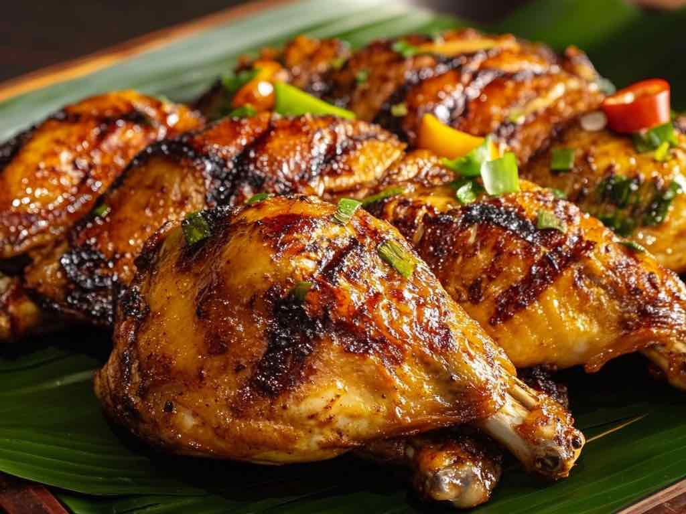

Chicken Inasal Recipe
Chicken Inasal is a famous Ilonggo grilled
chicken dish known for its distinct flavor. The chicken is marinated in a special blend of spices and grilled
to perfection. While it may sound like an ordinary grilled chicken, the unique marinade and basting sauce set it apart, giving it that unmistakable Ilonggo taste.

Ingredients
- 2 lbs chicken cut into serving pieces
- 2 tablespoons ginger minced
- 2 tablespoons garlic minced
- 3/4 cup lemongrass chopped
- 1 cup coconut vinegar
- 1/2 cup lemon or calamansi juice
- 1 tablespoon salt
- 1/4 cup brown sugar
- 1 cup lemon soda softdrink
- 1/2 tablespoon ground black pepper
- Basting Sauce:
- 3 tablespoons annatto oil atsuete oil
- 1/2 cup lemon or calamansi juice
- 1/2 cup margarine softened
- 1/4 teaspoon salt
- 1 teaspoon lemon or calamansi juice
How To Cook
- In a freezer bag or bowl, combine chicken, lemongrass, seasonings,
sugar, vinegar, soda, and lemon juice.
- Mix well and marinate for 1–3 hours
- In another bowl, stir together margarine, annatto oil, salt, and lemon juice for the basting sauce.
- Grill the chicken, brushing with the sauce as it cooks.
- Transfer to a serving plate and enjoy with sinamak.